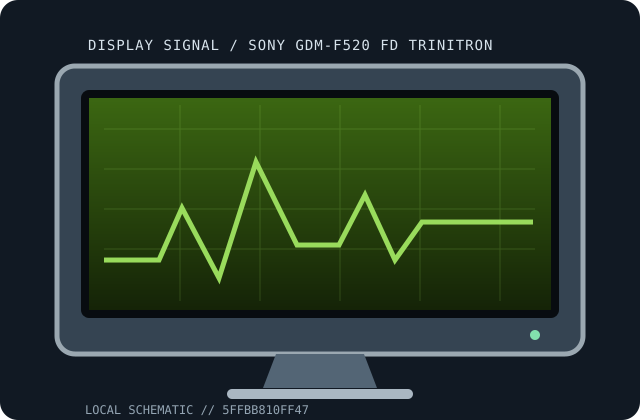

[ INDIVIDUAL COMPONENT // DISPLAYS ]
Sony GDM-F520 FD Trinitron
21-inch high-resolution FD Trinitron CRT CRT displays.

IDENTIFICATION: Match the full model and regional suffix on the rear label. Values are tied to the named model; revision-dependent electrical/mechanical details are qualified rather than guessed.
Specifications
| Catalog subcategory | CRT displays |
|---|---|
| Exact product / family | Sony GDM-F520 FD Trinitron |
| Panel / tube | 21-inch FD Trinitron, about 19.8-inch viewable |
| Native timing / refresh | No native matrix; up to 2048 × 1536 at 60 Hz |
| Inputs | HD-15 analog RGB |
| Power | Power consumption and regional mains rating are not generalized; check exact rear label and matching manual. |
| Stand / size | Approximate viewable diagonal shown above; retain original stand. Exact footprint/weight depend on model and stand. |
Revision, signal & host compatibility
Suffixes and regional versions can change scan limits and electrical ratings. Match the chassis label to the manual; do not substitute specifications from similar models.
CRT has no fixed pixel-native mode. Source must output analog RGB inside model-specific horizontal/vertical scan limits; passive adapters do not convert digital video.
Preservation & repair notes
Record focus, geometry, convergence, color balance and degauss at multiple scan rates. CRT internals retain hazardous voltage after unplugging; service requires qualified CRT practice.
Log serial/date label, accessories, image condition, source signal, calibration, firmware and repair history. Use the manufacturer's service procedures and qualified technicians for internal work.
Manufacturer manuals & sources
- Sony — official support and documentation portalLocate the exact model manual/specification at the manufacturer's portal. The chassis label and matching revision document govern power, timings and service.
- Model-specific manual catalog search: Sony GDM-F520 FD TrinitronDocumentation discovery reference; verify any located guide against the exact model/revision before applying specifications or repair instructions.